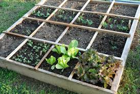

Welcome To My Garden
Welcome !!This is a first stop to know how to do urban farming. Here we teach you great tips about home compost prepration, terrace gardening and home kitchen setup.To know more about the serices offered, you can check on the images below.
Gardening Services
